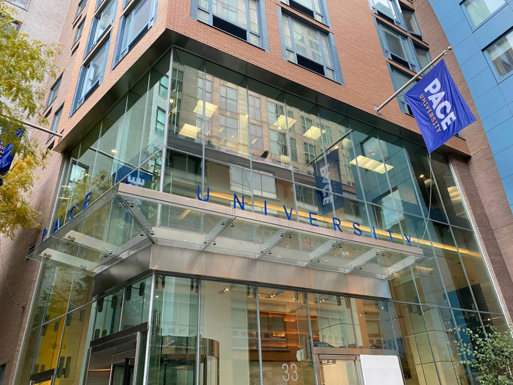
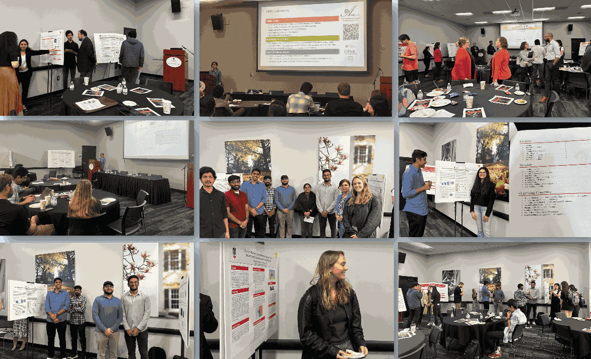
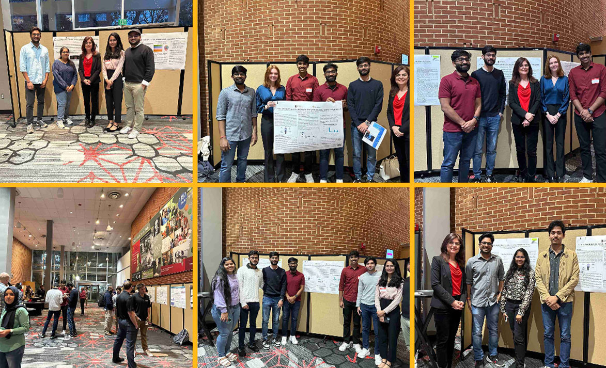

Our Team
Director
-
Soheyla Amirian , PhD, Pace University.
Academic Advisory Board
- Jonathan Hill, DPS, Pace University.
- Li-Chiou Chen, PhD, Pace University.
- Hamid R. Arabnia, PhD, University of Georgia.
- Khaled Rasheed, PhD, University of Georgia.

Graduate Research Assistants
- Soumya Sri Perepu, PhD student, Pace University, Spring 2026 – Fall 2026
- Pavan Bodanki, Graduate student, Fall 23, Spring, and Summer 24
- Rohan Swapneel Intipalli, Graduate student, Fall 23, Spring 24
- Vedraj Sachin Chavan, Graduate student, Fall 23, Spring 24
- Vaishnavi Ganjikunta, Graduate student, Fall 23, Spring 24
- Aditya U. Patel, Graduate student, Fall 23, Spring 24
- Lakshmi Meghana Bojja, Graduate student, Fall 23, Spring 24
- Venkata Sivasai Ramachandra Punith Kandula, Graduate student, Fall 23, Spring 24
- Manoj Tumkur Shivashankar, Graduate student, Fall 23, Spring 24
- Boby John Loganathan, Graduate student, Fall 23, Spring 24
- Nikhita Mallappa Biradar, Graduate student, Fall 23, Spring 24
- Ashutosh Kekre, Graduate student, Fall 23, Spring 24



Student Research Highlight
Soumya at the IBM/IEEE AI Compute Symposium 2026
CareCompute: Compute-Aware Selective Agentic AI for False-Negative Rescue
On October 28, 2026, Soumya Sri Perepu presented her research at the IBM Thomas J. Watson Research Center in Yorktown Heights, New York. Her project investigates selective computation, intelligent routing, and human-in-the-loop oversight in AI-assisted clinical decision-making.
Research advisor: Dr. Soheyla Amirian, AMIIE Lab
RAI and Ukrainian Project
- Vladyslav Protsenko, Graduate student, Ukrainian Catholic University, Fall 24 – Summer 25
- Danylo Reznyk, Undergraduate student, Igor Sikorsky Kyiv Polytechnic Institute, Fall 24 – Summer 25
- Yaroslav Klym, Undergraduate student, Ukrainian Catholic University, Fall 24 – Summer 25
Undergraduate Research Assistants
- Mary Margaret Gleason, Spring 24
- James Laurence Rivera, Spring 24
- Tharushika Dp Maryan Dehipitiarachchi, Fall 23, Spring 24
- Dias Mashikov, Fall 23
- Bryce N. Wellman, Fall 23
- Catherine Kimbrell Goldman, Summer and Fall 23
- Sean Nicolas Payne, Summer 23
- Robin Grazulis, Spring 23
Teaching Assistants
- Le Zhou, PhD student, Fall 2025 – Fall 2026
- Arpit Shah, Graduate student, Fall 24 – Spring 25
- Qingchen Kong, Graduate student, Summer 24
- Sandeep Reddy Guthireddy, Graduate student, Spring 24
- Wei Liang, Undergraduate student, Spring 24
- Maggie Opsahl, Undergraduate student, Spring 24
- Nima Darbandi, Graduate student (recipient of the Teaching Assistant Award in Spring 2024!), Fall 23
- Rohan Swapneel Intipalli, Graduate student (recipient of the Teaching Assistant Award in Spring 2024!), Fall 23
- Abdulrahman Ahmed Gharawi, Graduate student, Spring 23, 24
- Kishan Kalaria, Undergraduate student, Fall 23
- Anna Hu, Undergraduate student, Spring and Fall 23
- Afsaneh Shams, Graduate student (recipient of the Teaching Assistant Award in Spring 2023!), Spring and Fall 23
- Sakher Khalil Alqaaidi, Graduate student, Summer 23
- Ehsan Asali, Graduate student, Summer 23
- Zainab Adeola Agboola, Graduate student, Spring 23
- Yousef Fekri, Graduate student, Spring and Summer 23
- Benjamin Abel Goodwin, Undergraduate student, Spring and Summer 23
- Zhengliang Liu, Graduate student, Spring 23
- Manas Mishra, Graduate student, Spring 23
- Sarayu Ramachandra, Undergraduate student, Summer 23
- Matthew Sand, Undergraduate student, Spring 23